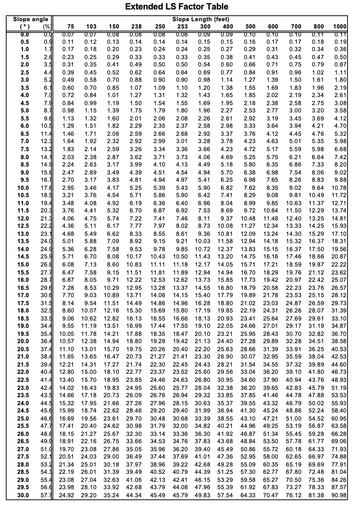

| Soil | Rate (High/Low) | Explanation |
| Uncovered | ||
| Covered |
13 Soil Management: Physical
Objectives
- Learn how to use the Universal Soil Loss Equation, USLE.
- Determine the effect of crop management and cropping practices on soil loss.
Key Words & Concepts
- USLE
- T
- Conservation tillage
- Conventional tillage
- Crop management
- Cropping practice
13.1 INVESTIGATION A: Soil Water Erosion: Raindrop Impact
Soil erosion occurs naturally on all land. Soil erosion may proceed relatively unnoticed or it may occur at an alarming rate — causing serious loss of topsoil. The loss of soil from farmlands is usually reflected in reduced crop production potential, lower surface water quality and damaged drainage networks.
Raindrop Impact
Spread a thin layer of each soil on separate pieces of paper. Hold the water dropper one foot above the surface of the soil-covered paper. Allow a single drop of water to fall from the dropper onto the soil. Observe the effects on the silty and sandy soils.
- What effect does the impact of the water have on each soil (explain any differences that you observe)?
- How would the presence of plant cover change this?
13.2 INVESTIGATION B: Soil Water Erosion: Residue Cover and Runoff
Water Runoff
Pour just enough water (about ½ of the small beaker) into each funnel at the top of each column so that a small amount of water runs off the soil surface and collects in a larger beaker. Compare the difference in erosion between the uncovered and covered soil. Complete the following table.
13.3 INVESTIGATION C: Predicting Erosion with the Universal Soil Loss Equation
Determine the erosion rates for the Seaton and Frontenac soils (located on the plaster landscape model). Use the white-painted lines and indicated lengths for the LS factor for the three erosion estimates. These soils are located in Winona County, MN.
\[ USLE:\ A\ =\ R\ *\ K\ *\ LS\ *\ C\ *\ P \]
A = Soil loss in tons per acre
R = Rainfall factor
C = Crop management factor
K = Soil erodibility factor (use surface values)
LS = Slope length and slope steepness factor
P = Erosion control practice factor
T = Tolerable loss
Complete the table below following steps 1 – 5.
| R | K | LS | C | P | A | T | |
| Site 1: Corn-oats-pasture rotation; no conservation practices | |||||||
| Site 2: Corn-soybean rotation; no conservation practices | |||||||
| Site 3: Woodland; no conservation practices |
R is found on the laminated map in the lab.
K and T are found in the Winona County Soil Survey, Table 16, page 261.
LS is found as follows:
a. Measure the slope length on the plaster model by placing a ruler between the black lines on the laminated plastic marker at each location. Measure to the nearest 1/16 inch. Record your measurement in Table 2 below.
b. Convert the measurement from Step 1 to feet. Multiply your measurement obtained in Step 1 using the horizontal scale factor (1:1,520), then divide by 12. Do this at each sampling location. Record your result in Table 2 below.
c. Read the slope in degrees off the dial on the side of the clinometer (Figure 1) at each sampling location on the plaster model (the white lines). Some of the sampling sites on the model are not are not flat so the clinometer will tend to rock back and forth. Try to average the variation by finding a middle point. Record your reading in Table 2.
d. Divide the measured slope obtained in Step 3c by 2 to correct for the vertical exaggeration of the model. For example, if you obtain a clinometer reading of 16° on the model, the corrected slope is 8° (16° ÷ 2 = 8°). Record your calculation in Table 2.
e. Using the Extended LS Factor Table on the next page, find the slope in degrees in Column 1 corresponding to the corrected value obtained in Step 3d. Record the corresponding slope in percent from Column 2 in Table 2. You will need percent slope to determine P. f. Continue moving across the row to the column that corresponds to the slope length in feet found in Step 3b and read the LS factor from the body of the table. There is no need to interpolate. Record the LS factor in Tables 1 and 2.
C and P are found in the corresponding tables in Investigation D (last page of book). Use the information given in the first column of Table 1.
To obtain A, multiply R, K, LS, C, and P in Table 1.
Check with the lab TA to be sure your calculations of soil loss (A) for Investigation A are acceptable before going on to Investigation D.
| Site | Length on Model (in; step 3a) | Length on Earth (ft; step 3b) | Slope (degrees; step 3c) | Slope / 2 (degrees; step 3d | Slope (%; step 3e) | LS (step 3f) |
| 1 | ||||||
| 2 | ||||||
| 3 |

13.4 INVESTIGATION D: Modifying Soil Loss
The tolerable soil loss for most soils in Minnesota is approximately 3 to 5 tons per acre per year. Which area(s) from Table 1 in Investigation C exceed T (circle two)?
Site 1 Site 2 Site 3
Modify C and P to reduce erosion below T for the areas you circled. Fill out the tables below.
Keep in mind that the landowner wants to maximize their income from the land while implementing conservation practices. Converting a field to woodland significantly reduces income and requires ten to twenty years’ investment before realizing any return. Consequently, converting a field to woodland is the least desirable option and should be used only if no other combination to reduce A to below T can be found.
Fill out the table with your new management strategy.
| Site | C | P |
| 1 | ||
| 2 | ||
| 3 |
Show new calculations in the table below.
| R | K | LS | C | P | New A | T | |
| 1 | |||||||
| 2 | |||||||
| 3 |
Crop management factor, C.
| C | Management |
| 1.00 | No crop; moldboard plow |
| 0.55 | Continuous corn; moldboard plow |
| 0.40 | Corn-soybean rotation |
| 0.30 | Continuous corn; conservation tillage |
| 0.20 | Corn-oats rotation |
| 0.08 | Corn-oats-pasture rotation |
| 0.04 | Continuous corn; no till |
| 0.01 | Pasture |
| 0.00 | Woodland |
Erosion control practice factor, ratio of soil loss compared to farming up and down the slope, P.
| Slope % | No Practice | Contouring Alone | Contouring plus alternate strips with small grains | Contouring plus alternate strips with grass |
| 1.1-2.0 | 1.0 | 0.6 | 0.4 | 0.3 |
| 2.1-7.0 | 1.0 | 0.5 | 0.4 | 0.2 |
| 7.1-12.0 | 1.0 | 0.6 | 0.4 | 0.3 |
| 12.1-18.0 | 1.0 | 0.8 | 0.6 | 0.4 |
| 18.1-24.0 | 1.0 | 0.9 | 0.7 | 0.4 |